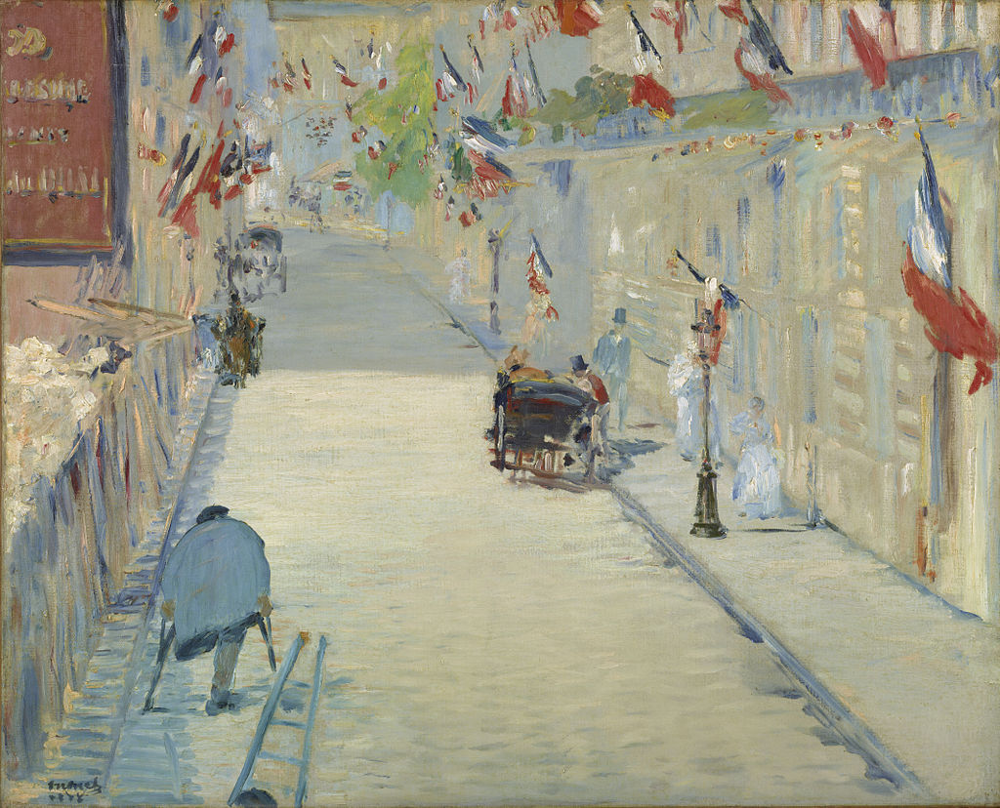

<head>
<meta charset="UTF-8" />
<meta name="keywords" content="drawing, painting" />
<meta name="description" content="drawings by Sunjy" />
<title>Sunjy</title>
<link rel="shortcut icon" type="image/x-icon" href="../../mImages/mCommon/favicon.ico" media="screen" />
<link rel="stylesheet" type="text/css" href="../../mCsses/mCommon/mCssA.css" />
<link rel="stylesheet" type="text/css" href="../../mCsses/mCommon/mCssB.css" />
<link rel="stylesheet" type="text/css" href="../../mCsses/mCommon/mCssC.css" />
<link rel="stylesheet" type="text/css" href="../../mCsses/mCommon/mCssD.css" />
<link rel="stylesheet" type="text/css" href="../../mCsses/mContent/mCssA.css" />
<link rel="stylesheet" type="text/css" href="../../mCsses/mContent/mCssB.css" />
<link rel="stylesheet" type="text/css" href="../../mCsses/mContent/mCssC.css" />
<link rel="stylesheet" type="text/css" href="../../mCsses/mContent/mCssD.css" />
</head>
<script type="text/javascript" src="../../mScripts/mContent/mContentAA.js" /></script>
<script type="text/javascript" src="../../mScripts/mContent/mContentAB.js" /></script>
<script type="text/javascript" src="../../mScripts/mContent/mContentAC.js" /></script>
<script type="text/javascript" src="../../mScripts/mContent/mContentAD.js" /></script>
<script type="text/javascript"></script> 
<script type="text/javascript">
document.write('<div class="mImgAbsolute"></div>');
/*
document.write('<p class="mFontSizeBColor" />From a white paper...</p>');
document.write('<table class="center"><tr><td>');
document.write('');
document.write('</td></tr></table>');
*/
</script>


<script type="text/javascript">
document.write('<p class="mFontSizeBColor" />The Rue Mosnier Dressed with Flags</p>');
document.write('<p class="mFontSizeSColor" />“The Rue Mosnier Dressed with Flags” by Édouard Manet depicts a Parisian street, decorated with French flags for the first national holiday, which occurred on 30 June 1878. It was called the “Fête de la Paix,” or in English, “Celebration of Peace.”<br><br>The Rue Mosnier, which is now called the Rue de Berne, could be seen from Manet’s studio at 4 Rue de Saint-Pétersbourg. This canvas shows the view from his second-floor window, with tricolor flags hanging from the buildings along the road.<br><br>Manet captured the holiday afternoon in the top half of the composition with a patriotic harmony of the reds, whites, and blues of the French flag that waved along the street.<br><br>In the bottom half of the composition is a one-legged man on crutches, possibly a veteran wounded in the Franco-Prussian War. Also, at the bottom is a man carrying a ladder, and on the left is a fence holding back the rubble from building works. <br><br>The urban street was a subject of interest for Impressionist and Modernist painters. Manet reflected the transformation and growth of the Industrial Age and how it impacted society.<br><br>Manet shows both the elegantly dressed and their hansom cabs and a worker carrying a ladder. He captured the cost of progress with the hunched amputee on crutches and the construction zone for a new train track.<br><br>Manet was interested in the sacrifices required for national pride and newfound industrial prosperity.<br><br>Commentators of the day remarked on the enthusiasm for this public holiday when the tricolor dominated the streets of Paris. Even hearses carrying the deceased to the cemetery were decked with the national flag.<br><br>First national holiday on 30 June 1878<br><br>This painting represents the first French official national celebration to take place following the defeat of Napoleon III in 1870.<br><br>The festivities also marked the 1878 Universal Exhibition and heralded the advent of the French Third Republic, established several months later.<br><br>To commemorate the recent Exposition Universelle, itself a celebration of prosperity and progress, the French government declared June 30, 1878, a national holiday.<br><br>The holiday called the “Celebration of Peace” also marked France’s recovery from the disastrous Franco-Prussian War of 1870-1871 and the bloody, divisive Paris Commune that followed.<br><br>Claude Monet produced similar paintings of flags on the Rue Montorgueil and Rue Saint-Denis in Paris in 1878. These works were later echoed by a painting of New York with flags by Childe Hassam.<br><br>The “Fête de la Paix” holiday was later moved to 14 July in 1880 to become the “Bastille Day” holiday.<br></p>');
document.write('<table class="center" /><tr><td>');
document.write('<br>The Rue Mosnier, which is now called the Rue de Berne, could be seen from Manet’s studio at 4 Rue de Saint-Pétersbourg. This canvas shows the view from his second-floor window, with tricolor flags hanging from the buildings along the road.<br><br>Manet captured the holiday afternoon in the top half of the composition with a patriotic harmony of the reds, whites, and blues of the French flag that waved along the street.<br><br>In the bottom half of the composition is a one-legged man on crutches, possibly a veteran wounded in the Franco-Prussian War. Also, at the bottom is a man carrying a ladder, and on the left is a fence holding back the rubble from building works. <br><br>The urban street was a subject of interest for Impressionist and Modernist painters. Manet reflected the transformation and growth of the Industrial Age and how it impacted society.<br><br>Manet shows both the elegantly dressed and their hansom cabs and a worker carrying a ladder. He captured the cost of progress with the hunched amputee on crutches and the construction zone for a new train track.<br><br>Manet was interested in the sacrifices required for national pride and newfound industrial prosperity.<br><br>Commentators of the day remarked on the enthusiasm for this public holiday when the tricolor dominated the streets of Paris. Even hearses carrying the deceased to the cemetery were decked with the national flag.<br><br>First national holiday on 30 June 1878<br><br>This painting represents the first French official national celebration to take place following the defeat of Napoleon III in 1870.<br><br>The festivities also marked the 1878 Universal Exhibition and heralded the advent of the French Third Republic, established several months later.<br><br>To commemorate the recent Exposition Universelle, itself a celebration of prosperity and progress, the French government declared June 30, 1878, a national holiday.<br><br>The holiday called the “Celebration of Peace” also marked France’s recovery from the disastrous Franco-Prussian War of 1870-1871 and the bloody, divisive Paris Commune that followed.<br><br>Claude Monet produced similar paintings of flags on the Rue Montorgueil and Rue Saint-Denis in Paris in 1878. These works were later echoed by a painting of New York with flags by Childe Hassam.<br><br>The “Fête de la Paix” holiday was later moved to 14 July in 1880 to become the “Bastille Day” holiday.<br>" />');
document.write('</td></tr></table>');
</script>


